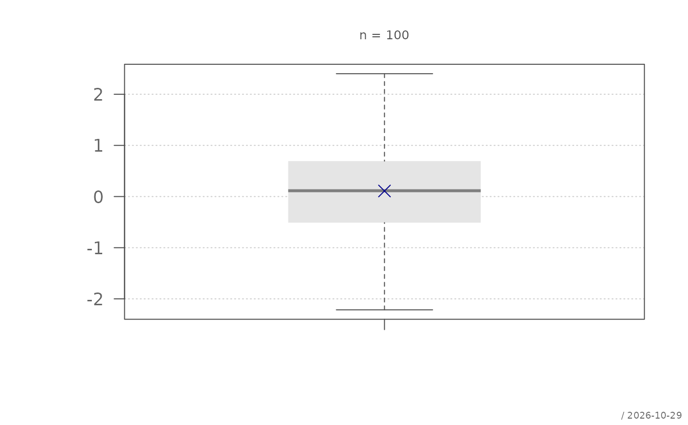
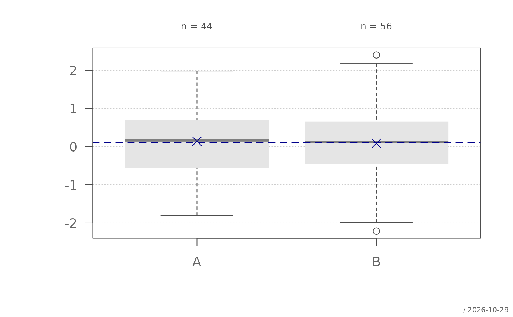
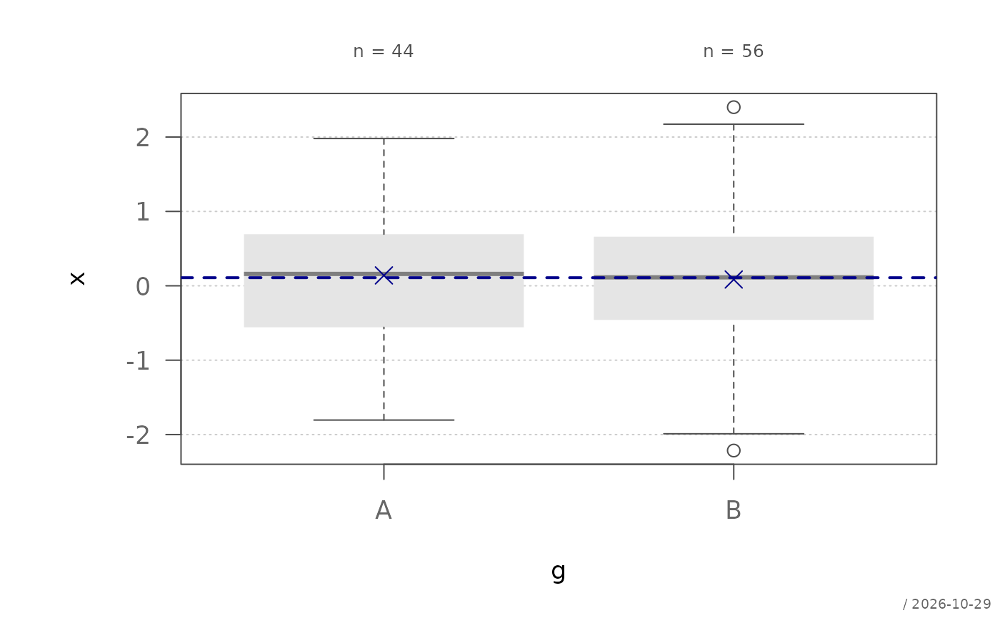
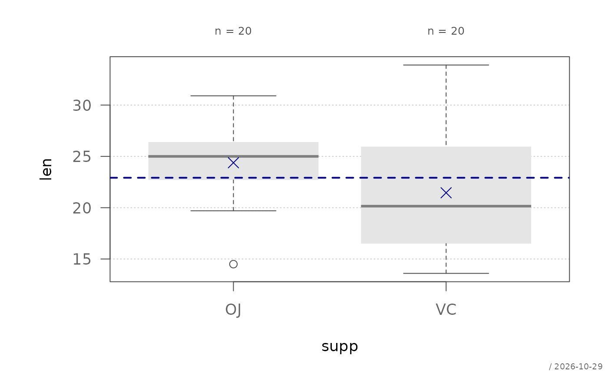
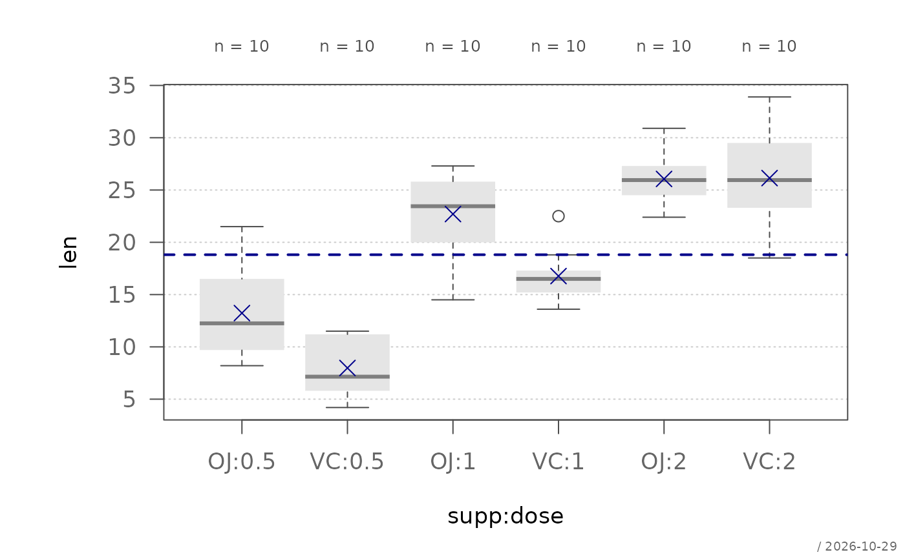
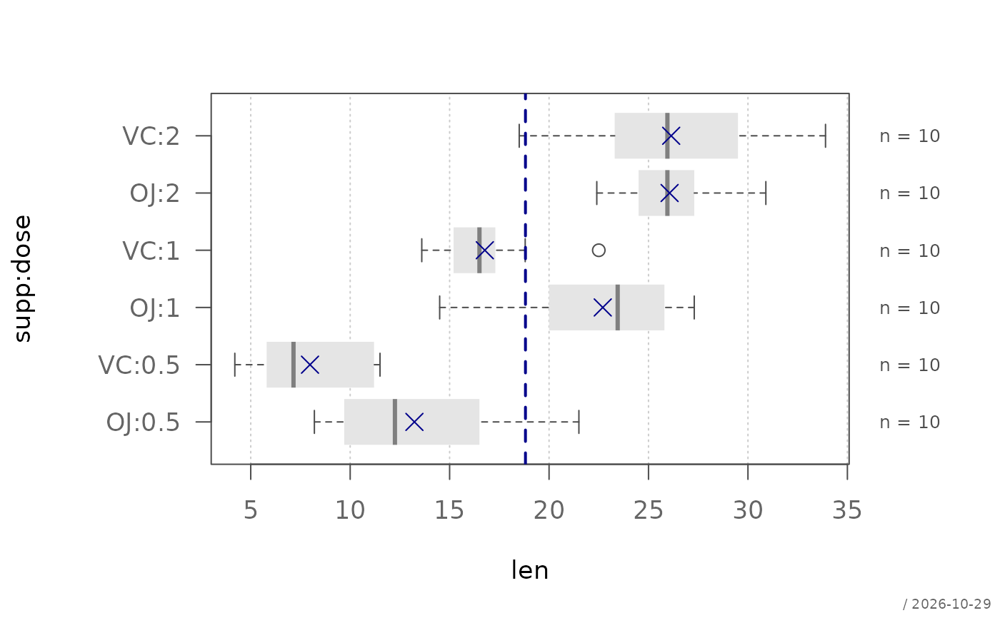
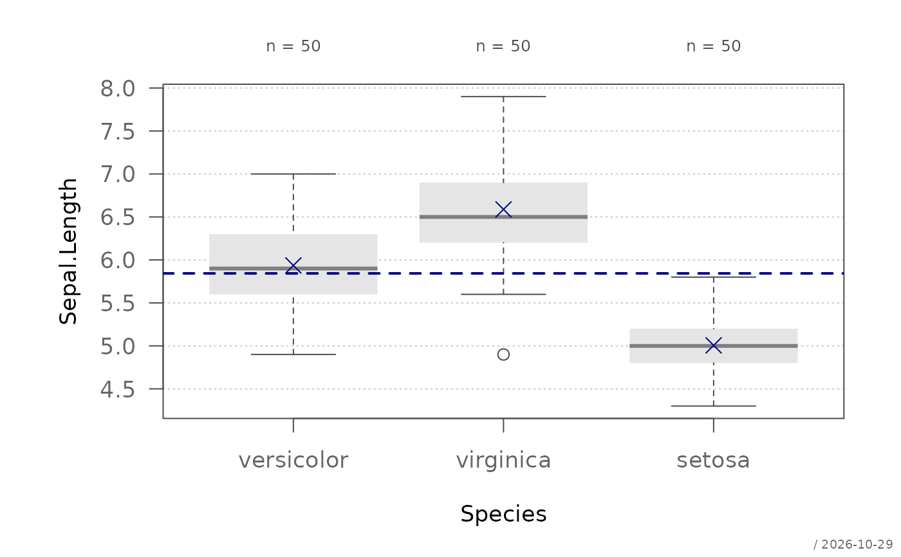
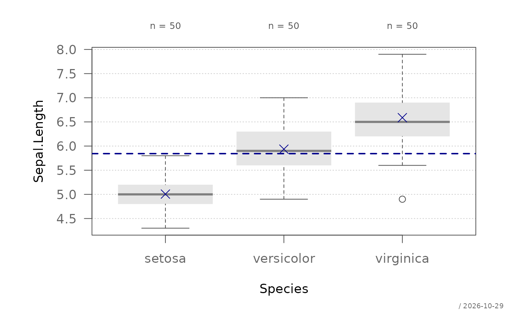

Draws boxplots for a numeric variable, optionally grouped by a categorical variable. Group means and a reference line for the overall mean can optionally be overlaid.
Usage
plotBox(x, ...)
# Default S3 method
plotBox(
x,
groups = NULL,
order = NULL,
horiz = FALSE,
main = NULL,
xlab = "",
ylab = "",
ylim = NULL,
col = NULL,
grid = TRUE,
means = TRUE,
stamp = .useTheme,
...
)
# S3 method for class 'formula'
plotBox(
formula,
data,
subset,
na.action = na.omit,
horiz = FALSE,
main = NULL,
xlab = "",
ylab = "",
...
)Arguments
- x
numeric vector, or a formula of the form
x ~ g.- ...
graphical parameters. Parameters recognized by the internal graphics framework are applied via
par(); remaining arguments are forwarded tographics::boxplot(). By default the boxes are drawn without an outline (boxlty = 0) and with a grey median (medcol = "grey50"). Supplyingborderdraws the outline in that color, and the median follows it;boxltyandmedcolgiven explicitly take precedence.- groups
optional grouping variable (ignored if a formula is used).
- order
optional order of the groups along the group axis: a character vector of group levels, e.g.
order = c("versicolor", "virginica", "setosa"), or their positions (order = c(2, 3, 1)). Levels not mentioned follow in their original order.NULL(default) keeps the order of the factor levels. Colors given incolapply to the groups in the order drawn.- horiz
logical. If
TRUE, the boxes are drawn horizontally, as withboxplot(horizontal = TRUE): groups on the y-axis, values on the x-axis. DefaultFALSE. The left margin is then widened to the longest group label, unlessmarin...sets the left side.- main
main title.
NULL(default) draws none, unless the theme setsautoTitle = TRUE(see theme); the title is then derived from the input: the formula, orx ~ gfor the default method."",NAorFALSEalways suppress it and compact the top margin; any other string is used as given.- xlab
label for the x-axis, i.e. the horizontal axis as drawn (the value axis if
horiz = TRUE).- ylab
label for the y-axis, i.e. the vertical axis as drawn (the group axis if
horiz = TRUE).- ylim
numeric vector of length 2 specifying the limits of the value axis (the x-axis if
horiz = TRUE, as ingraphics::boxplot()). IfNULL(default), the range ofxis used.- col
vector of fill colors, recycled over the groups.
NULL(default) uses"grey90".- grid
controls drawing of the background grid. Can be:
TRUE: draw grid with default settings (lines along the value axis only)FALSE,NULL, orNA: suppress grida named list: arguments passed to
graphics::grid(), e.g.list(col = "red", nx = NA, ny = NULL)for horizontal lines only
- means
controls drawing of group means and an overall mean reference line. The reference line is drawn only for more than one group; with a single box it would merely repeat its mean. Can be:
TRUE: draw with default settingsFALSE,NULL, orNA: suppressa named list: arguments passed to the internal means function. Supported arguments:
col,pch,cex,lcol,lty,lwd.
- stamp
controls the corner stamp.
.useTheme(default) resolves togetTheme()$stamp.TRUE/FALSE/NULL, or an explicit string, as for.withGraphicsState()(internal).- formula
a formula of the form
y ~ group, ory ~ a:bfor the cells of several grouping variables.y ~ a + bis not accepted, seebedrock::resolveFormula().- data
an optional data frame containing the variables in the formula.
- subset
an optional expression indicating which observations to use, evaluated in
data(subset = len > 10), as inboxplot().- na.action
a function specifying how missing values are handled, defaults to
na.omit().
Details
Optional plot components are controlled using
bedrock::callIf() semantics:
TRUE: draw with defaultsFALSE,NULL, orNA: suppress componentnamed list: customize component arguments
See also
graphics::boxplot(),
bedrock::callIf()
Other plot.univariate:
plotArea(),
plotBar(),
plotCatDist(),
plotDens(),
plotDensBox(),
plotDot(),
plotECDF(),
plotFreqDist(),
plotLines(),
plotQQ(),
plotRidge(),
plotViolin()
Examples
set.seed(1)
x <- rnorm(100)
g <- sample(c("A", "B"), 100, TRUE)
plotBox(x)

plotBox(x, g)

plotBox(x ~ g)

# data, subset and the cells of two grouping variables
plotBox(len ~ supp, ToothGrowth, subset = dose > 0.5)

plotBox(len ~ supp:dose, ToothGrowth)

# horizontal boxes
plotBox(len ~ supp:dose, ToothGrowth, horiz = TRUE)

# groups in a chosen order, e.g. by median
plotBox(Sepal.Length ~ Species, data = iris,
order = c("versicolor", "virginica", "setosa"))

med <- tapply(iris$Sepal.Length, iris$Species, median)
plotBox(Sepal.Length ~ Species, data = iris, order = order(med))
